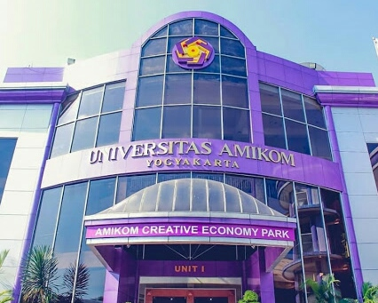

Universitas Amikom Yogyakarta

Universitas Amikom Yogyakarta terletak di
Jalan Ring Road Utara, Ngiringin, Condongatur, Kec. Depok, Kabupaten Sleman,
D.I Yogyakarta.
Amikom berdiri sejak tahun 1994 dan berubah menjadi Universitas sejak tahun 2007 Perubahan bentuk ini dilakukan untuk mempermudah
tercapainya visi dan misi sebagai perguruan tinggi unggulan dunia dalam bidang ekonomi kreatif berbasis
entrepreneurship.
Saat menjadi Universitas, Amikom memiliki tiga fakultas yaitu
Fakultas ilmu komputer, Fakultas Sains dan Teknologi, Fakultas Ekonomi dan Sosial. Universitas Amikom Yogyakarta juga telah meraih 80 penghargaan
internasional dan lebih dari 210 penghargaan nasional serta menghasilkan 24% lulusannya sebagai pengusaha.
 Universtas Amikom juga memiliki
MSV Studio
yang bergerak dalam bidang animasi. Salah satu karya yang di hasilakan adalah
Battle Of Surabaya
yang di sutradai oleh
Aryanto Yuniawan
dan diliris, pada tahun 2015 tayang di seluruh Bioskop Indonesia bertahan selama Satu bulan dan mendapatkan 41 Penghargaan Internasional. Battle of Surabaya adalah film
animasi 2D,
aksi dan sejarah Indonesia. Film ini menceritakan seorang anak yang bernama Musa berperan menjadi tukang semir
sepatu yang bertugas untuk menjad kurir bagi perjuangan pejuang arek-arek Suroboyo dan TKR dalam peristiwa pertempuran dahsyat
10 November 1945 di
Surabaya.
Universtas Amikom juga memiliki
MSV Studio
yang bergerak dalam bidang animasi. Salah satu karya yang di hasilakan adalah
Battle Of Surabaya
yang di sutradai oleh
Aryanto Yuniawan
dan diliris, pada tahun 2015 tayang di seluruh Bioskop Indonesia bertahan selama Satu bulan dan mendapatkan 41 Penghargaan Internasional. Battle of Surabaya adalah film
animasi 2D,
aksi dan sejarah Indonesia. Film ini menceritakan seorang anak yang bernama Musa berperan menjadi tukang semir
sepatu yang bertugas untuk menjad kurir bagi perjuangan pejuang arek-arek Suroboyo dan TKR dalam peristiwa pertempuran dahsyat
10 November 1945 di
Surabaya.
Penulis: Syavana Dwi. S (X.RPL 3)
Untuk foto dokumentasi klik link berikut:
Dokumentasi